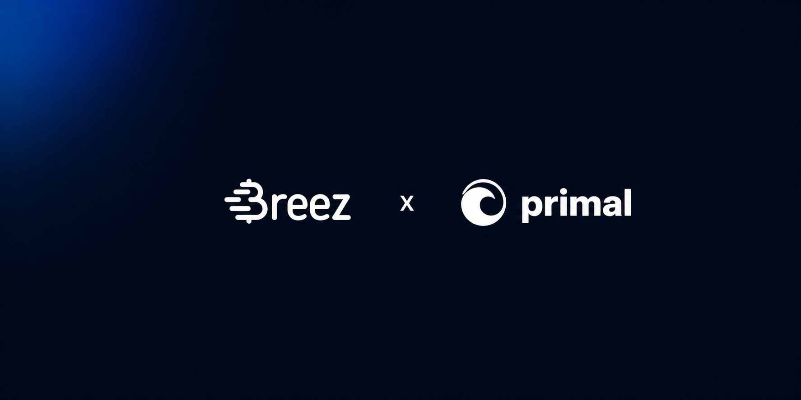

Primal: Value Transfer Inside the Social Feed


Primal is a social media app with everything users expect: feed, posts, follows, replies. In many ways, it's like any other social network.
The difference is what's underneath. Primal runs on Nostr, an open social protocol that puts users in control, not the algorithm. Since it's a protocol rather than a platform, users keep their identity, data, and money, interacting directly on whatever local client they prefer.
Primal is Nostr's most popular client app. It's how most people experience the network and where most of its activity happens, and it's built to reflect Nostr's peer-to-peer design.
One piece of the peer-to-peer promise was missing. Primal users have always been able to retain their identities and their data, but they had to relinquish the money they wanted to use for tipping, zapping, and paying.
Every social network would like to let value move between users inside the app, but none has managed to do it right. KYC, balance limits, and geographic restrictions leave users with a subpar experience every time. That's why users typically have to leave the app to access their money and perform transactions.
Primal launched in 2023 with a custodial wallet. On Nostr, a decentralized network, that's a step backwards: a custodial wallet reintroduces the kind of intermediary that the network was designed to obviate. At the time, there was no non-custodial product that could deliver the instant bitcoin experience Primal needed for a mainstream audience, so they opted to compromise on custody to improve the UX. It was, however, just a stopgap solution and never meant to be permanent.
The custodial wallet served the basic purpose, but it did so at the cost of reintroducing exactly the constraints Nostr and Primal sought to avoid: the KYC, the limits, and the regional restrictions.
The fix was simple in principle but hard in practice. Primal needed to replace the custodial wallet with a non-custodial one, without losing the reliability and effortless experience that made the custodial wallet seem like the preferable option. No product on the market met those criteria. Custodial wallets fail on user sovereignty and regulatory friction, while traditional Lightning wallets require users to manage channels and juggle liquidity. A social media app that puts obstacles on the onboarding path is doomed before it launches.
Primal now has what they could only dream of in 2023: an instant, non-custodial bitcoin wallet. The new experience includes all of the benefits with none of the compromises. Users can still zap a post, and the bitcoin lands in their friend's wallet. But thanks to the Breez SDK, the friction and the middleman are gone. What remains is simply instant, non-custodial bitcoin, Lightning-fast, with value flowing directly between users, who now enjoy the same freedom and autonomy for their money that Primal was already delivering for their identity and data.
For users:
- Speed: instant bitcoin without transitional friction from custodial to non-custodial.
- Borderless: no KYC, no balance limits, and no geographic restrictions. Instant value transfer is available in every region Primal serves.
- Sovereignty: users hold their own keys and are finally in control of their funds.
"Building on the Breez SDK enabled us to deliver a wallet that is a strict improvement for our users: no KYC, no limits, and available globally."
Miljan Braticevic, CEO — Primal
For developers:
Primal's devs enjoyed an effortless integration that let them migrate users seamlessly. There was no inconvenience for existing users, and the onboarding friction for new ones was virtually eliminated at a stroke. Primal users even get to preserve their Lightning addresses, their balances, and their transaction histories.
For growth:
Primal has opened the product to every region and every user, including the millions who were never willing or able to onboard into a custodial flow. Now they can zap with Primal's own wallet from anywhere, with no identity check at the door. Value moves directly between users, inside the feed.
For twenty years, social media has stood between users and the value they send each other. Primal has now obliterated that barrier.
Ready to Get Started?
Join Primal and 75+ apps adding instant, non-custodial bitcoin with the Breez SDK.